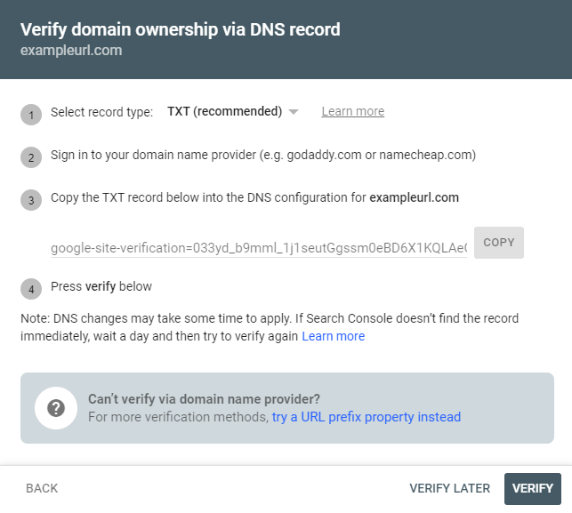
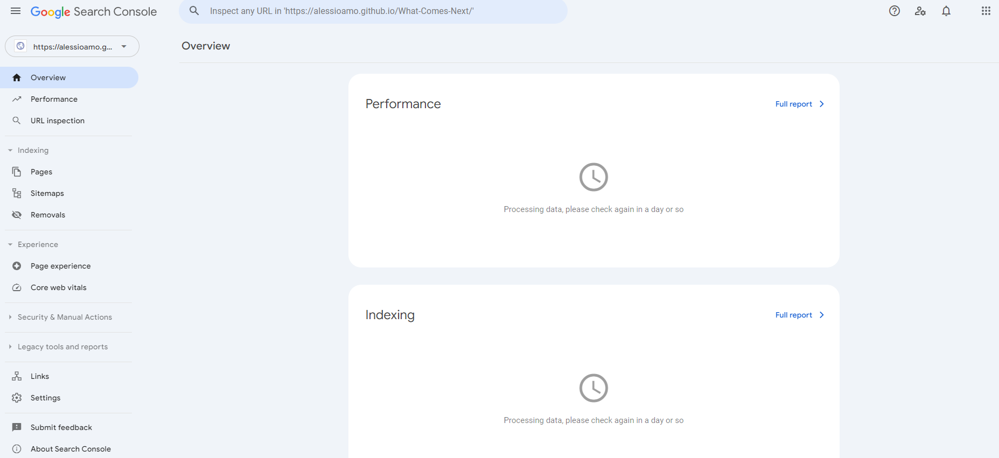
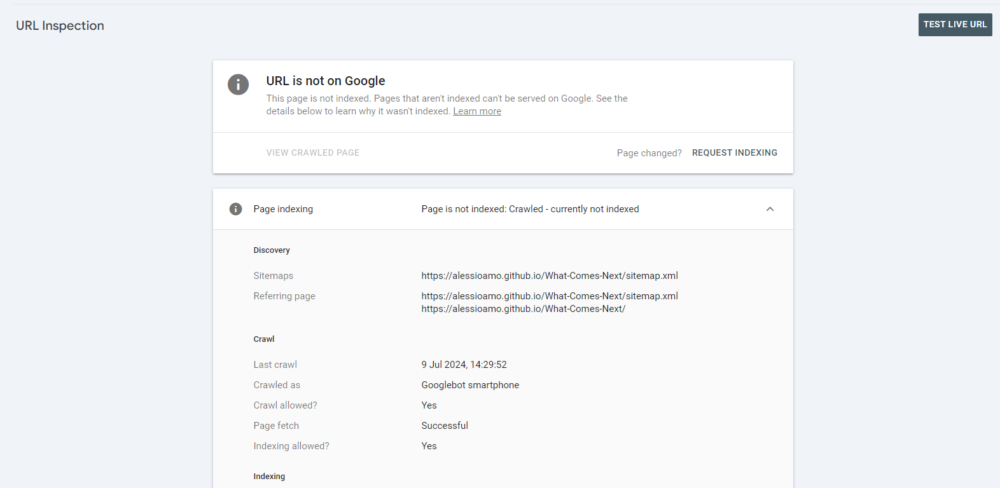
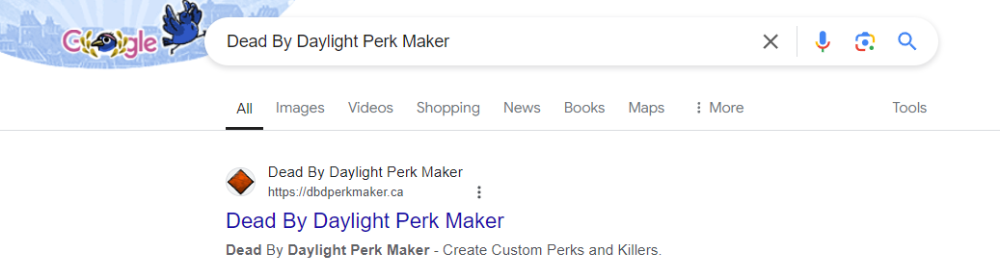

So you finally finished your website that you have spent a while working on and it looks great! Everything is working nice and the site is being hosted online so you can visit it through the link. You are proud of the work you have done, as you should be, but there’s one problem now. When you look up your website on Google, it does not show up. You even try to write the link directly in the search bar and not even that works. The reason why this is happening is because your website is not indexed.
If you do not know what indexing is, it is simply the process of search engines storing and organizing web pages so that when users search something, they can be retrieved and shown in the search results. When you create and host a website, it is not indexed and that’s why it is not showing up on Google. In this post, I will show you how to index your pages, as well as enhance the SEO (search engine optimization) of your website so it can reach the top of the Google search results.
The first step is to have your website be ready to go and hosted somewhere whether it is locally, through GitHub Pages, or another web hosting platform. Once that is complete, you must visit Google Search Console and click on Start Now. You will need to sign into a Google account to proceed.
Once signed in, you must click the dropdown at the top left of the page and select Add Property. Here you will be prompted to select the property type between Domain and URL Prefix. The difference between the two is that Domain will track your entire website while the URL Prefix will only track that specific URL. You can select which is better for you but generally, Domain will be best.
Once you enter your website’s URL, a popup will appear. This popup is so that you can verify that you own this domain. For Step 1, select TXT for the record type. From here on, if you are using a domain provider such as godaddy.com, you can sign in and paste the TXT record from Step 3 into the DNS configuration for your website. Another method of verifying can be to copy the TXT record and paste it directly into your webpage’s main html file.

The record will have a format similar to this: google-site-verification=033yd_b9mml_1j1seutGgssm0eBD6X1KQLAeGajg_cQ
In the tag of your html file, you can paste the following:
<meta name="google-site-verification" content="033yd_b9mml_1j1seutGgssm0eBD6X1KQLAeGajg_cQ" />
Where name is google-site-verification and content is all the characters after the = sign from the TXT record.
Once this is complete, you can click on Verify to proceed. If done correctly, you will move on to the next section. If is does not work, you can try waiting for a few hours or re-try the above steps.
After verifying, you will be brought to your overview page for your website. You will see that it is processing data and to check again in a day or so. Generally it can take anywhere from 1 day to a week for statistics to start showing up so there is no need to panic. The next step you can take to help improve the SEO of your site is to submit a sitemap.

A sitemap is a file that you can submit that contains information about your website and the pages of your website and the relationships between them. It allows search engines to crawl through your website and helps index it. To submit a sitemap you can lookup sitemap generators online (or just visit this one) to create one. You can enter the link of your website and it will generate a sitemap.xml file that contains the information of your website and all associated pages.
Once downloaded, you can upload this file to the same location as your main website’s page. Then, in Google Search Console you can find the Sitemaps tab where you can enter the name and location of your sitemap file. After submitting, if successful, it will now appear under your submitted sitemaps. If it does not work, try to re-generate the file or place it somewhere else in your files and update the link accordingly.
At this point, you have completed the basics and your website should be indexed! Keep in mind that it can take a few days, to a few weeks for it to officially be indexed. You can view the status of your indexing on your Overview tab or in your Pages tab. In order to test if your website is indexed, you can also type site:sitename into Google where sitename is the link of your website. When adding new pages to your site, you can also regenerate and re-submit the sitemap to add the new pages to it.
Code doesn't need to be pretty to function, but you will thank your past self if it is.
If you notice that your pages are not being indexed, there is a way to solve it. In the search bar of Google Search Console, you can directly paste the link of the page that is not indexed. From here, you might see the image below.

You can click on Test Live URL to make sure that your URL exists and that Google can access it. If successful, you will see the following:
Then you can click on Request Indexing in order for the page to be indexed. Again, this can take anywhere from a few minutes, to a few days so do not be rushed for this. If it does not work, you will be shown the reason why and from there, you can act accordingly to solve them.
Note that I have had some issues in the past to index pages that have had ../ accessors within the code to access other files so if you have these and are encountering issues, that may be the case.
Now that you have indexed your site, there are some steps you can take to optimize it. The first is to include meta tags in your code. The important tags are description and keywords:
<meta name="description" content="A blog that follows a Computer Science graduate and explores What Comes Next">
<meta name="keywords" content="blog, computer, science, student, computer science, computer science student, graduate, graduation, grad">
In the content section for description, you can type the description of your site. This is what user’s will see on Google underneath your website name. Keywords can be any combination of single words or multiple words that describe your website so if people look up these words, yours has a better chance of popping up. Be sure to include as many spellings and variations to increase your chances as well (see above for example).
You can also submit a Robots.txt file to control which file crawlers that can access your site. This link from Google explains in depth how to create one and what their purpose is so if you have the chance, give it a read!
Finally, a very efficient method of optimizing your website is simply by sharing it on the web. Sharing it on Twitter, Reddit, Instagram, and any other platform, as well as sharing it with your friends and getting them to click on it is always a great way to grow your page and helps bring it to the top.
Although there might be a lot of blogs out there and I may not be at the top (or anywhere near it), I do believe I have some credibility with one of my projects reaching the top. I created a website to help create custom assets for a video game (dbdperkmaker.ca) and I have managed to push it to the top of Google. If you were to search up its name (abbreviated or full) with different combinations of the words perk maker, perk creator, custom concept creator, etc, it should be the first one!

Praising aside, it is very important for your website to be indexed and optimized in many ways so that you can gain as much attention and visits from users. I have listed many ways to do this, but there are always more out there to further improve your site. I hope this has helped and I hope you start to see more green checkmarks and lines in your Search Console. I also hope that one day, you can see your website at the top of the Google Search results and be proud of what you accomplished.